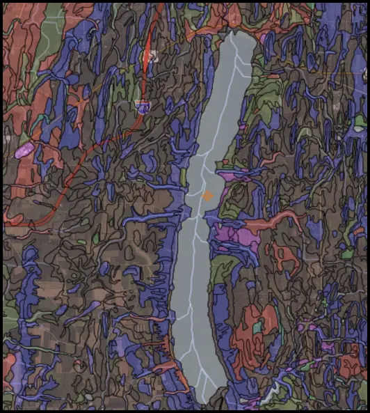
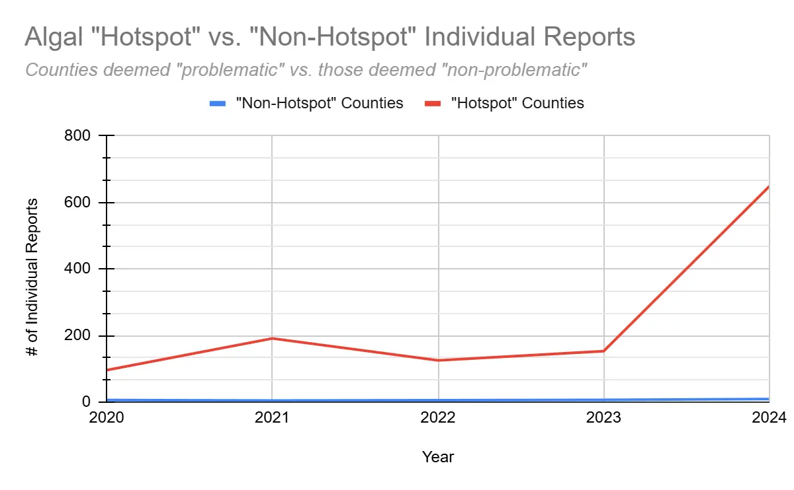
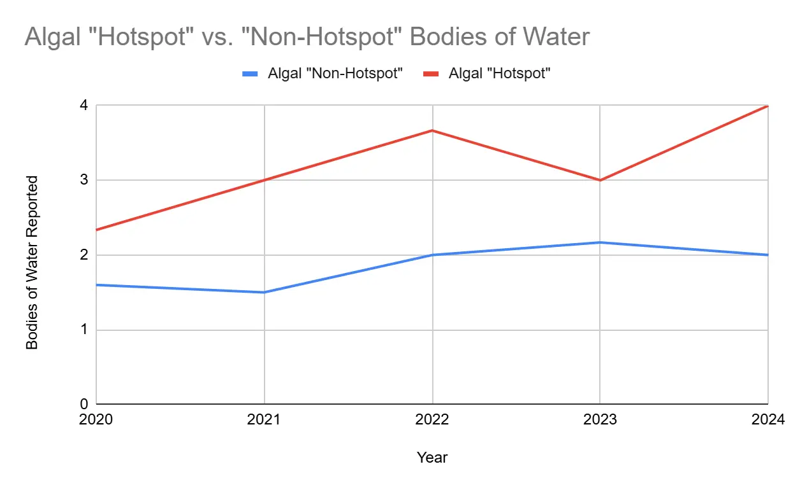

Full research report · Climate Solutions Accelerator
The Impact of Climate Change on Harmful Algal Blooms in the Genesee–Finger Lakes Region
A nine-county review connecting harmful algal bloom reports with precipitation, temperature, lake history, and watershed runoff conditions.

Abstract
The Genesee-Finger Lakes Region (G/FLR) is an expansive region in Western New York State consisting of nine counties. This region, home to the 11 Finger Lakes and one Great Lake, is regularly impacted by runoff-driven eutrophication and subsequent HAB events (NYSDEC, 2001). It has been established in the literature that, as an overall trend, increasing levels of climate change exacerbate HAB incidence, severity, and levels of algal growth (CDC, 2024). However, to the best of the author’s knowledge, no regional study to date has explored the problem of climate change-fueled HAB incidence in the G/FLR specifically. Between 2020 and 2024, HAB reports in the region increased sixfold, with individual report submissions rising from an average of 36 to over 220 annually. Three counties—Yates, Seneca, and Ontario—emerged as clear Algal Hotspots, each demonstrating report rates more than 40 times higher than neighboring counties.
These same counties showed seasonal temperature averages consistently within the Microcystis-favorable range (20–30°C) and maintained high precipitation anomalies, which strongly correlated (r = 0.77) with HAB frequency. Soil analysis further revealed that lakes classified as “High-Severity Problem Lakes” (Canandaigua, Seneca, and Cayuga) are surrounded primarily by Group D and B/D soils—those most prone to runoff.
Introduction
Harmful algal blooms, otherwise known as HABs, are widespread environmental phenomena characterized by an overabundance of certain types of algae-like organisms, primarily cyanobacteria, but including some kinds of dinoflagellates and/or diatoms as well (Cornell Wildlife Health Lab, 2023). HABs have increasingly affected fresh and saltwater ecosystems globally and, possibly in part due to increased monitoring efforts, across the United States as well (Hallegraeff et al., 2021). There have been notable increases in HAB incidence within the G/FLR of New York over the past decade (Johnston et al., 2024). For example, in 2017, all 11 Finger Lakes experienced open water, shoreline, or both types of HABs (Johnston et al., 2024). The Finger Lakes are especially susceptible to certain HAB events due to their historical glacial formation, contributing to their depth(s), ranging from 30-650 ft. (WIltse, 2022; NASA, 2013).
Deeper bodies of water such as the Finger Lakes are affected by processes like stratification, ultimately contributing to favorable HAB conditions by trapping nutrients within the warmer surface layer(s), increasing algal food availability (SGWASA, 2024). Shallower, coastal areas of these bodies of water are additionally susceptible, as there is a more direct impact by sunlight, leading to potentially higher water temperatures within the water column. Although a multitude of factors contribute to the formation of HABs, they are known to form in nearly any kind of warm, slow—or non-moving—body of water with an excess of nutrients such as NO3 and PO4 (Department of Environmental Protection, n.d.). In terms of temperature, most cyanobacterial strains maintain an “ideal” temperature range of between 27°C and 37°C, though anything over 25°C is considered favorable (Hu et al., 2023).
The overabundance of nutrients observed within HAB events is called eutrophication, and is generally classified as any nutrient loading which exceeds the body of water’s self-purifying capacity (NOAA, 2023). HABs are known to form a surface scum atop the surface of afflicted bodies of water, often described as similar to spilled paint or pea soup in appearance. They can manifest in a variety of colors depending on the HAB-causing strain, but are most commonly blue, green, red, or brown (CDC, 2024). Algal scum is extremely dense, and can therefore stop the sun’s rays from penetrating the surface of the water. This may halt photosynthetic activity within the water and can ultimately induce hypoxia (NCCOS, 2024), leading to adverse environmental effects. Hypoxia is characterized by low levels of dissolved O2 within the water column (O2 < 3 mg/L), and can contribute to ecological events such as fish kills (Small et al., 2014).
Hypoxic events are additionally detrimental to recreational, commercial, and other economic industries when they occur, on both local and global scales (e.g. fishing, swimming, boating, dining). Eutrophication most commonly arises due to a multitude of factors, but arguably most significantly agricultural runoff. In terms of applied fertilizers used on farmland, surface runoff has been responsible for significant nutrient loading in recent years. In 2022 alone, according to the USDA, the United States applied 11.96 million metric tons of nitrogen fertilizer to farmland (1.19 x 1010 kilograms). The literature has shown that, on average, 20% of applied nitrogen-based fertilizers are washed away following application due to this phenomenon (WRI, n.d.). Therefore, it is reasonable to hypothesize that extensive amounts of nitrates, nitrites, and other fertilizer compounds are being introduced into the water column on an annual basis nation-wide, only exacerbating the current problem seen with runoff.
Eutrophication contributes to the very “ideal” water conditions in which cyanobacteria thrive. The phenomenon takes susceptible bodies of water (i.e. slow/non-moving, warm water sources) and exacerbates their already existing predisposition to algal formation, by providing an excess of an algal “food source” in the form(s) of phosphorus and/or nitrogen. HABs—particularly those which consist of cyanobacteria—are known to produce numerous bioactive metabolites, referred to as cyanotoxins. There are three primary categories of these toxins, largely formatted based on their mode(s) of action: neurotoxins, hepatotoxins, and dermatoxins. Some of the most frequently-seen cyanotoxins produced by HABs are a classification of hepatotoxins known as the Microcystins, produced by Microcystis algal strains, of which over 300 congeners exist. Microcystis-LR (MC-LR), is a potent liver tumor promoter, encourages apoptosis through cytotoxic means, and is among one of the most common MCs encountered in the natural environment (Ito, 1997; Lankoff et al., 2004; Chaffin et al., 2023).
Climate change can exacerbate eutrophication, as it creates conditions which can increase nutrient loading in water, such as elevated temperatures, which can ultimately release deposited nutrients from lake sediments (Rodgers, 2021). It has been demonstrated that climate change may impact HAB incidence; however, to the best of the author’s knowledge, the topic of research has not yet been described in-depth with focus on the G/FLR, with many studies instead focusing on universal algal mechanisms themselves. As such, the intended purpose of this paper is to i.) assess both current regional climatic trends and future predictions relating to “HAB-ideal” conditions; ii.) determine to which extent nutrient leaching may occur in the area, which exacerbates HAB formation; and iii.) determine which region(s), if any, pose the most significant algal threats.
Methodology
3.1: “Problem Lakes” Identification and Definition “Problem Lakes” were identified from collected DEC HAB data, and formatted into one of the following categories: 1.) Low Priority; 2.) Low-Severity; 3.) Mid-Severity; and 4.) High-Severity. These classifications were assigned based on i.) how often HAB events are observed and ii.) the number of annual reports submitted to DEC per water body. A Low-Severity Problem Lake averages 2.0-9.9 reports, a Mid-Severity averages 10.0-49.9 reports, and High-Severity blooms average 50+ reports. If one particular lake maintained less reports than a High-Severity bloom, for instance, but experiences significant cyanotoxin release, it would be classified as High-Severity. Any lake assigned a “Low Priority” classification is not considered a long-term Problem Lake, even if it has experienced HAB events in the past, due to a lack of recurrence and/or toxin prevalence.
3.2: Soil Hydrological Group Determination The soil hydrologic groups for each body of water determined to be “Low-Severity” or worse was determined using soil data sourced from the Web Soil Survey (WSS), an extensive database provided by the National Cooperative Soil Survey and operated by the USDA Natural Resources Conservation Service. For each lake assessed, detailed soil maps—such as the example provided in Figure 1—were analyzed. These maps illustrate varying soil units within the watershed boundaries, each assigned a specific hydrological classification (A, B, C, D, or dual classifications such as B/D or C/D). Soil groups were interpreted based on their infiltration rates and runoff potential, with Group A representing soils with high infiltration and low runoff potential, and Group D indicating soils with slow infiltration and high runoff risk. By examining the acreage and proportional coverage of each soil type within each lake’s watershed, the dominant hydrological group—and thus the runoff potential—was identified.
Figure 1 depicts a representative section from the Conesus Lake watershed analysis, highlighting soil makeup of the surrounding area (shown through various colors) encountered during this assessment.
Results
Between 2020 and 2024, the nine counties within the Genesee-Finger Lakes Region (G/FLR) have experienced a notable rise in both HAB occurrences and individual HAB reports. Over these years, the mean number of water bodies reported to the DEC yearly has increased from approximately 1.67 to 2.67. Individual annual reports also surged dramatically, over six-fold, from an average of 36 to 222.
Notably, Yates, Seneca, and Ontario counties consistently reported significantly higher occurrences than the remaining six counties, averaging 243 annual reports over four years, compared to just 6 yearly in the others (p < 0.05). These counties additionally reported approximately 1.7-fold (±0.30) more affected water bodies. Due to these marked increases, Yates, Seneca, and Ontario counties have been identified as potential "Algal Hotspots" (see Table 1 & Figure 2 for detailed data).
Precipitation Anomaly, a representation of how much excess rainfall is occurring compared to the pre-established 100-year NOAA average, showed a possibly strong Pearson Product-Moment correlation coefficient with the number of individual HAB reports within the region, at a value of 0.77. The number of individual reports and the number of reported bodies of water maintained smaller correlation coefficients with the population value (<-0.40 and <-0.05, respectively). For each HAB-afflicted lake (as sourced from DEC data), the severity of HAB events were estimated. Overall, four (4) lakes were classified as "Low-Severity Problem Lakes" (Conesus Lake, Hemlock Lake, Java Lake, and the Monroe County portion of Lake Ontario).
Two (2) bodies of water, Honeoye Lake and Keuka Lake, were determined to be possible "Mid-Severity Problem Lakes". Three (3) lakes, Cayuga, Seneca, and Canandaigua, were classified as "High-Severity" Problem Lakes, with considerably higher 5-Year Report Averages and Peaks than all others. The final three (3) referenced High-Severity water bodies are much grander in impact than others considered, with 5-Year Report Averages of 107, 189, and 113, respectively. Any body of water classified as “Low Priority” was considered, and ultimately, despite potential periodic HAB events, were hypothesized to not present a long-term severe problem.
In recent years (2020–2024), average seasonal temperatures in Yates, Seneca, and Ontario counties remained consistently within the favorable growth range for Microcystis strains (20–30°C), with each year supporting conditions that may exacerbate bloom formation.
In all three counties, each year examined (2020-2024) fell within the strain's ideal range, with no recorded average exceptions since 2009. Conversely, the optimal temperature range for Cylindrospermopsin-producing algae (25–30°C) was not met in Ontario County at all during the same period, which is notable given the past presence of Dolichospermum algae. Although average temperatures trended upward, values remained below this threshold, with a maximum of 23.4°C in 2020.
Discussion
The G/FLR encompasses an area of approximately 4,575 mi2 of land and is home to over 1.2 million people within 188 municipalities as per the 2010 U.S. census, as well as the third largest city in all of New York, Rochester (G/FLRPC, n.d.). It is a distinct region in Western NY, made up of 9 counties (Genesee, Livingston, Monroe, Orleans, Ontario, Seneca, Wayne, Wyoming and Yates). This region, and these nine particular counties were chosen due to an array of factors: the area contains deep, narrow “finger” lakes (such as Seneca and Cayuga) as well as shallower bodies (e.g. parts of Skaneateles and Owasco), and these locations respond directly to nutrient loading. There is additionally a good representative sample, in terms of environmental diversity, in the region.
The G/FLR houses both urbanized areas with more complex nutrient sources, like Genssee, as well as predominantly rural counties where agricultural influences would be more pronounced, such as Seneca. According to data from NYSDEC’s Citizens Statewide Lake Assessment Program (CSLAP), specifically their 2018 Water Quality Report, it shows that, within the same year that 10/11 of the Finger Lakes exhibited blooms, a few distinctive trends could be observed, with one outstanding: phosphorus levels maintained a strong positive correlation with chlorophyll-a, reinforcing the role of phosphorous presence in bloom formation. This encourages some degree of action to diminish regional nutrient loading.
There was an observed significant increase in HAB reports between 2020 and 2024, particularly within Yates, Seneca, and Ontario counties, which have emerged as distinct "Algal Hotspots." The significantly higher average number of reports in these three (3) counties compared to the other six (6) counties within the region indicates one, or a combination of, the following factors: 1.) geographical or anthropogenic discrepancies; 2.) increased HAB severity in “Problem Lakes”; 3.) varying weather patterns across regions. Precipitation anomalies, representing deviations in rainfall from established historical averages, exhibited a notably strong correlation coefficient (~0.77) with HAB report frequency, contributing to the scientific consensus that increased rainfall—a predicted effect of climate change—is in fact likely exacerbating nutrient runoff, thus fueling eutrophication and subsequent HAB events. Counties with higher rainfall anomalies, specifically Yates and Seneca, correspondingly reported higher frequencies of HABs, strengthening the argument that intensified precipitation events directly amplify nutrient runoff and exacerbate algal growth conditions.
This may also emphasize the hydrological soil results, given their association with runoff. According to EPA and AAPFCO data, New York State purchased an average of 78,000,000 ± 16,650,000kg of N-based fertilizer annually from the years 2011-2017. The reported percent change (44%) for these years is significant compared to years prior (2002-2006), shown to be -11%. In the same timespan, NYS purchased an average of 28,266,000 ± 4,703,000kg of P-based fertilizer, with the percent change from 2002-2011, reported as -20%, rising to 28% from 2011-2017. This indicates an ongoing increasing trend in the magnitude of fertilizer purchased as time has increased, though more exponential in terms of N-fertilizer than P-based fertilizers. It may therefore be inferred that current values are even larger.
As—on average—20% of N-based fertilizers and up to 2% of P-based fertilizers are lost to agricultural runoff, if all purchased product was, at some point applied, New York State would have released over 100,000,000kg of purchased nitrogen fertilizer and 2,000,000 - 4,000,000kg of purchased phosphorus fertilizer in these six years alone. Analysis of soil hydrologic groups further clarified regional susceptibility.
High-Severity Problem Lakes (Canandaigua, Seneca, and Cayuga Lakes) predominantly featured Group D soils, indicative of poor drainage and high runoff potential. This soil profile amplifies eutrophication risks due to enhanced nutrient loading following precipitation events. Additionally, Mid-Severity Problem Lakes (Honeoye and Kekua Lakes) showed similar soil runoff potential, reinforcing the relationship between regional soil characteristics and HAB vulnerability.
Conclusion
This report, ultimately, demonstrates the association between actively changing climatic conditions, ongoing nutrient dynamics, and increased HAB occurrence within the G/FLR. The findings suggest that rising precipitation values—amplified by regional climate change—are likely contributing to elevated levels of nutrient runoff into surface waters, particularly in areas with hydrologically "unfavorable" soils. "High-Severity Problem Lakes" such as Seneca, Cayuga, and Canandaigua are consistently surrounded by Group D and B/D soils, which possess limited infiltration capacity and high runoff potential. When coupled with documented increases in nitrogen and phosphorus fertilizer application across the state, the likelihood of excess nutrient delivery to aquatic systems is significantly enhanced. This creates the ideal eutrophic conditions for increased HAB incidence. Yates, Ontario, and Seneca counties emerged as distinct "Algal Hotspots," displaying disproportionately high HAB report frequencies between 2020 and 2024.
These trends were not mirrored in the remaining counties, suggesting a geographically unequal distribution of climate-induced bloom severity and a potentially uneven future impact. It is also important to note that seasonal temperature averages across the region, particularly within hotspot counties, has remained well within the optimal range for Microcystis growth for sixteen years straight. This temperature consistency—paired with evidence of stratification in deeper lakes—further supports the argument that the G/FLR is increasingly predisposed to HAB formation under ongoing climate trajectories. To ensure and to maintain ecological longevity, public health safety, and to minimize disruptions to local industries, the implementation of informed mitigation strategies is critical, as well as ensuring education regarding HABs on a local stage. This includes enhanced year-round monitoring of bloom toxins and runoff mitigation efforts such as riparian buffer zones, wetland reintroduction, and agricultural BMPs.
Further research should continue to integrate HAB monitoring with climate projections and watershed-scale nutrient data, in order to more accurately anticipate emerging risk zones. Moreover, while it is true that the solution to HABs likely lies in education, further research should be done regarding remediation of these risk zones on a regional scale. Otherwise, HAB frequency and intensity in the G/FLR will likely be exacerbated, placing increasing pressure on aquatic ecosystems, drinking water resources, and regional economies all the same.
Regional data and figures
| Water body | 5-year average | 5-year peak | Classification | Runoff potential |
|---|---|---|---|---|
| Conesus Lake | 7.4 | 13 | Low severity | Moderate–high |
| Hemlock Lake | 3 | 5 | Low severity | Moderate–high |
| Lake Ontario (Monroe) | 8.2 | 24 | Low severity | Moderate–high |
| Honeoye Lake | 42.2 | 55 | Mid severity | High if undrained |
| Canandaigua Lake | 113.2 | 292 | High severity | High if undrained |
| Cayuga Lake | 107 | 147 | High severity | High if undrained |
| Seneca Lake | 189 | 377 | High severity | High if undrained |
| Java Lake | 4.2 | 7 | Low severity | Moderate–high if undrained |
| Keuka Lake | 13.4 | 16 | Mid severity | High |



References
1.)Agricultural contaminants | U.S. geological survey. (2019, March 1). USGS.gov. https://www.usgs.gov/mission-areas/water-resources/science/agricultural-contamina nts 2.)Burton, B., Collins, K., Brooks, J., Marx, K., Renner, A., Wilcox, K., Moore, E., Osowski, K., Riley, J., Rowe, J., & Pawlus, M. (2023). The biotoxin BMAA promotes dysfunction via distinct mechanisms in neuroblastoma and glioblastoma cells. PLOS ONE, 18(3), e0278793. https://doi.org/10.1371/journal.pone.0278793 3.)CDC. (2024, April 23). Harmful algal blooms: Contributing factors and impacts. Harmful Algal Bloom (HAB)-Associated Illness. https://www.cdc.gov/harmful-algal-blooms/about/harmful-algal-blooms-contributin g-factors-and-impacts.html 4.)Cornell University. (2023, September). Harmful algal blooms. Cornell Wildlife Health Lab | Promoting wildlife health and sustainability through the integration of wildlife ecology and veterinary medicine. Retrieved December 11, 2024, from https://cwhl.vet.cornell.edu/disease/harmful-algal-bloom 5.)Eutrophication and Hypoxia. (n.d.). World Resources Institute.
https://www.wri.org/initiatives/eutrophication-and-hypoxia/learn 6.)Global Market Analysis Modeling Team. (2022, June). Impacts and Repercussions of Price Increases on the Global Fertilizer Market. USDA Foreign Agricultural Service. https://www.fas.usda.gov/sites/default/files/2022-09/IATR%20Fertlizer%20Final.pd f 7.)Habhrca. (2024, December 13). NCCOS - National Centers for Coastal Ocean Science. https://coastalscience.noaa.gov/science-areas/habs/habhrca/ 8.)Hallegraeff, G. M., Anderson, D. M., Belin, C., Bottein, M. D., Bresnan, E., Chinain, M., Enevoldsen, H., Iwataki, M., Karlson, B., McKenzie, C. H., Sunesen, I., Pitcher, G. C., Provoost, P., Richardson, A., Schweibold, L., Tester, P. A., Trainer, V. L., Yñiguez, A. T., & Zingone, A. (2021). Perceived global increase in algal blooms is attributable to intensified monitoring and emerging bloom impacts. Communications Earth & Environment, 2(1). https://doi.org/10.1038/s43247-021-00178-8 9.)Harmful algal blooms (HABs). (n.d.). Department of Environmental Conservation. Retrieved November 25, 2024, from
https://dec.ny.gov/environmental-protection/water/water-quality/harmful-algal-bloo ms 10.) Harmful algal blooms and your health. (2024, May 15). Harmful Algal Bloom (HAB)-Associated Illness. Retrieved March 10, 2025, from https://www.cdc.gov/harmful-algal-blooms/about/index.html 11.) Hu, L., Wang, H., Cui, J., Zou, W., Li, J., & Shan, K. (2023). Temperature-dependent growth characteristics and competition of Pseudanabaena and Microcystis. Water, 15(13), 2404. https://doi.org/10.3390/w15132404 12.) The icy origins of the finger lakes. (2013, November 30). NASA Earth Observatory. https://earthobservatory.nasa.gov/images/82448/the-icy-origins-of-the-finger-lakes 13.) Ito, E., Kondo, F., Terao, K., & Harada, K. (1997). Neoplastic nodular formation in mouse liver induced by repeated intraperitoneal injections of microcystin-LR. Toxicon, 35(9), 1453-1457. https://doi.org/10.1016/s0041-0101(97)00026-3 14.) Jiang, Q., Bhattarai, N., Pahlow, M., & Xu, Z. (2022). Environmental sustainability and footprints of global aquaculture. Resources, Conservation and Recycling, 180, 106183. https://doi.org/10.1016/j.resconrec.2022.106183
15.) Jiang, W., Zhou, W., Uchida, H., Kikumori, M., Irie, K., Watanabe, R., Suzuki, T., Sakamoto, B., Kamio, M., & Nagai, H. (2014). A new Lyngbyatoxin from the Hawaiian Cyanobacterium Moorea producens. Marine Drugs, 12(5), 2748-2759. https://doi.org/10.3390/md12052748 16.) Lankoff, A., Krzowski, Ł., Głąb, J., Banasik, A., Lisowska, H., Kuszewski, T., Góźdź, S., & Wójcik, A. (2004). DNA damage and repair in human peripheral blood lymphocytes following treatment with microcystin-LR. Mutation Research/Genetic Toxicology and Environmental Mutagenesis, 559(1-2), 131-142. https://doi.org/10.1016/j.mrgentox.2004.01.004 17.) NCEI.Monitoring.Info@noaa.gov. (n.d.). Climate at a Glance | County Mapping. National Centers for Environmental Information (NCEI). Retrieved November 25, 2024, from https://www.ncei.noaa.gov/access/monitoring/climate-at-a-glance/county/mapping 18.) Nitrate Leaching Index. (2005). Cornell Cooperative Extension. https://cceonondaga.org/resources/nitrogen-leaching-inde 19.) NYSDEC. (2001). Water Quality Study of the Finger Lakes. https://soar.suny.edu/bitstream/handle/20.500.12648/4368/tech_rep/76/fulltext%20(
1).pdf?sequence=1 20.) Rodgers, E. M. (2021). Adding climate change to the mix: Responses of aquatic ectotherms to the combined effects of eutrophication and warming. Biology Letters, 17(10). https://doi.org/10.1098/rsbl.2021.0442 21.) Small, K., Kopf, R. K., Watts, R. J., & Howitt, J. (2014). Hypoxia, blackwater and fish kills: Experimental lethal oxygen thresholds in juvenile predatory lowland river fishes. PLoS ONE, 9(4). https://doi.org/10.1371/journal.pone.0094524 22.) Toxic algae facts for everyone to know. (2024, October 25). Finger Lakes Land Trust. https://www.fllt.org/toxic-algae-facts 23.) Understanding algal blooms + thermal stratification. (2024, July 28). SGWASA. https://www.sgwasa.org/post/understanding-algal-blooms-thermal-stratification 24.) US Census Bureau. (2024, January 11). Population and Housing Unit Estimates. Census.gov. Retrieved November 25, 2024, from https://www.census.gov/programs-surveys/popest.html 25.) What are HABs? (n.d.). Department of Environmental Protection. Retrieved December 11, 2024, from
https://www.dep.pa.gov/Business/Water/HABs/Pages/default.aspx 26.) What is eutrophication? (2023, January 20). NOAA's National Ocean Service. https://oceanservice.noaa.gov/facts/eutrophication.html 27.) Wiltse, B. (2022, August 7). The finger lakes: Everything you want to know. All About Lakes. https://allaboutlakes.org/finger-lakes/
About this project
See the assignment, process, and Paul’s contribution.
Paul conducted the regional analysis and scientific communication work for the Climate Solutions Accelerator in the Genesee–Finger Lakes region.
Related work
Continue through the subject.

Think Your Water Is Clean? Climate Change Might Be Proving You Wrong
What harmful algal blooms can look like, why climate conditions matter, and why apparently clear water is not the whole story.

Rhizofiltration of an Induced Microcystis Bloom Using Water Hyacinth
A constructed-wetland experiment testing whether water hyacinth could remove bloom-supporting nutrients from an induced Microcystis system.

Phytoremediation of North American Harmful Algal Blooms Under Long-Term Feasibility Constraints
A feasibility-centered review comparing water hyacinth, star duckweed, and parrot’s feather for bloom suppression and cyanotoxin removal.